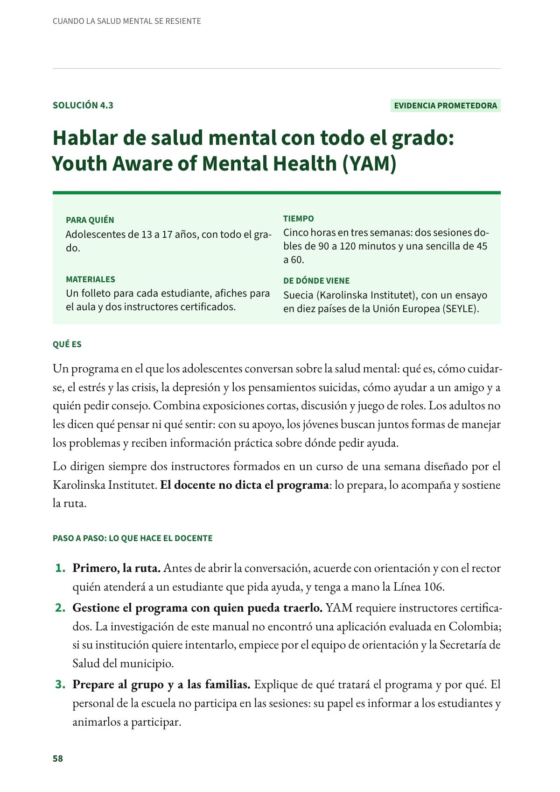
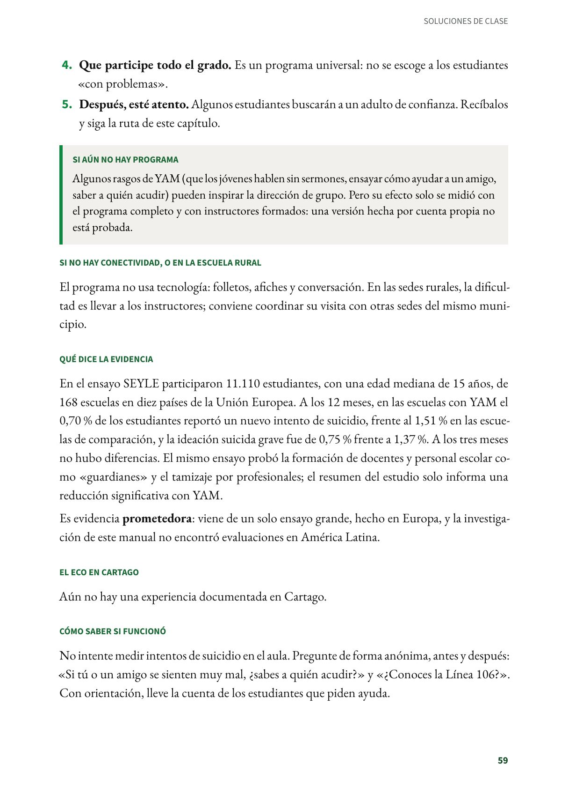
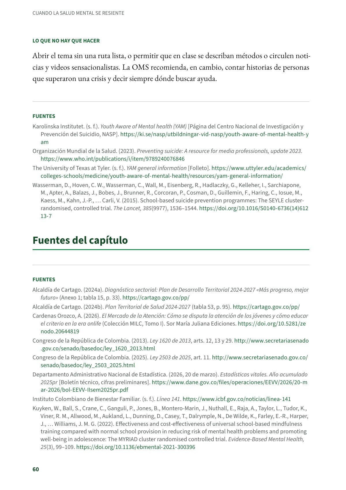

Hablar de salud mental con todo el grado: Youth Aware of Mental Health (YAM)
Un programa en el que los adolescentes conversan sobre la salud mental. Adolescentes de 13 a 17 años, con todo el grado. Evidencia prometedora.
PDF · 3 págs. · 74 KBEn resumen
- Evidencia: prometedora.
- Para quién: Adolescentes de 13 a 17 años, con todo el grado.
- Tiempo: Cinco horas en tres semanas: dos sesiones dobles de 90 a 120 minutos y una sencilla de 45 a 60.
- Materiales: Un folleto para cada estudiante, afiches para el aula y dos instructores certificados.
- De dónde viene: Suecia (Karolinska Institutet), con un ensayo en diez países de la Unión Europea (SEYLE).
Qué es
Un programa en el que los adolescentes conversan sobre la salud mental: qué es, cómo cuidarse, el estrés y las crisis, la depresión y los pensamientos suicidas, cómo ayudar a un amigo y a quién pedir consejo. Combina exposiciones cortas, discusión y juego de roles. Los adultos no les dicen qué pensar ni qué sentir: con su apoyo, los jóvenes buscan juntos formas de manejar los problemas y reciben información práctica sobre dónde pedir ayuda.
Lo dirigen siempre dos instructores formados en un curso de una semana diseñado por el Karolinska Institutet. El docente no dicta el programa: lo prepara, lo acompaña y sostiene la ruta.
Paso a paso: lo que hace el docente
- Primero, la ruta. Antes de abrir la conversación, acuerde con orientación y con el rector quién atenderá a un estudiante que pida ayuda, y tenga a mano la Línea 106.
- Gestione el programa con quien pueda traerlo. YAM requiere instructores certificados. La investigación de este manual no encontró una aplicación evaluada en Colombia; si su institución quiere intentarlo, empiece por el equipo de orientación y la Secretaría de Salud del municipio.
- Prepare al grupo y a las familias. Explique de qué tratará el programa y por qué. El personal de la escuela no participa en las sesiones: su papel es informar a los estudiantes y animarlos a participar.
- Que participe todo el grado. Es un programa universal: no se escoge a los estudiantes «con problemas».
- Después, esté atento. Algunos estudiantes buscarán a un adulto de confianza. Recíbalos y siga la ruta de este capítulo.
Si aún no hay programa
Algunos rasgos de YAM (que los jóvenes hablen sin sermones, ensayar cómo ayudar a un amigo, saber a quién acudir) pueden inspirar la dirección de grupo. Pero su efecto solo se midió con el programa completo y con instructores formados: una versión hecha por cuenta propia no está probada.
Si no hay conectividad, o en la escuela rural
El programa no usa tecnología: folletos, afiches y conversación. En las sedes rurales, la dificultad es llevar a los instructores; conviene coordinar su visita con otras sedes del mismo municipio.
Qué dice la evidencia
En el ensayo SEYLE participaron 11.110 estudiantes, con una edad mediana de 15 años, de 168 escuelas en diez países de la Unión Europea. A los 12 meses, en las escuelas con YAM el 0,70 % de los estudiantes reportó un nuevo intento de suicidio, frente al 1,51 % en las escuelas de comparación, y la ideación suicida grave fue de 0,75 % frente a 1,37 %. A los tres meses no hubo diferencias. El mismo ensayo probó la formación de docentes y personal escolar como «guardianes» y el tamizaje por profesionales; el resumen del estudio solo informa una reducción significativa con YAM.
Es evidencia prometedora: viene de un solo ensayo grande, hecho en Europa, y la investigación de este manual no encontró evaluaciones en América Latina.
El eco en Cartago
Aún no hay una experiencia documentada en Cartago.
Cómo saber si funcionó
No intente medir intentos de suicidio en el aula. Pregunte de forma anónima, antes y después: «Si tú o un amigo se sienten muy mal, ¿sabes a quién acudir?» y «¿Conoces la Línea 106?». Con orientación, lleve la cuenta de los estudiantes que piden ayuda.
Lo que no hay que hacer
Abrir el tema sin una ruta lista, o permitir que en clase se describan métodos o circulen noticias y videos sensacionalistas. La OMS recomienda, en cambio, contar historias de personas que superaron una crisis y decir siempre dónde buscar ayuda.
Fuentes
Karolinska Institutet. (s. f.). Youth Aware of Mental health (YAM) [Página del Centro Nacional de Investigación y Prevención del Suicidio, NASP]. ki.se
Organización Mundial de la Salud. (2023). Preventing suicide: A resource for media professionals, update 2023. who.int
The University of Texas at Tyler. (s. f.). YAM general information [Folleto]. uttyler.edu
Wasserman, D., Hoven, C. W., Wasserman, C., Wall, M., Eisenberg, R., Hadlaczky, G., Kelleher, I., Sarchiapone, M., Apter, A., Balazs, J., Bobes, J., Brunner, R., Corcoran, P., Cosman, D., Guillemin, F., Haring, C., Iosue, M., Kaess, M., Kahn, J.-P., … Carli, V. (2015). School-based suicide prevention programmes: The SEYLE cluster-randomised, controlled trial. The Lancet, 385(9977), 1536–1544. doi.org61213-7)
Así se ve en el libro
3 páginas

